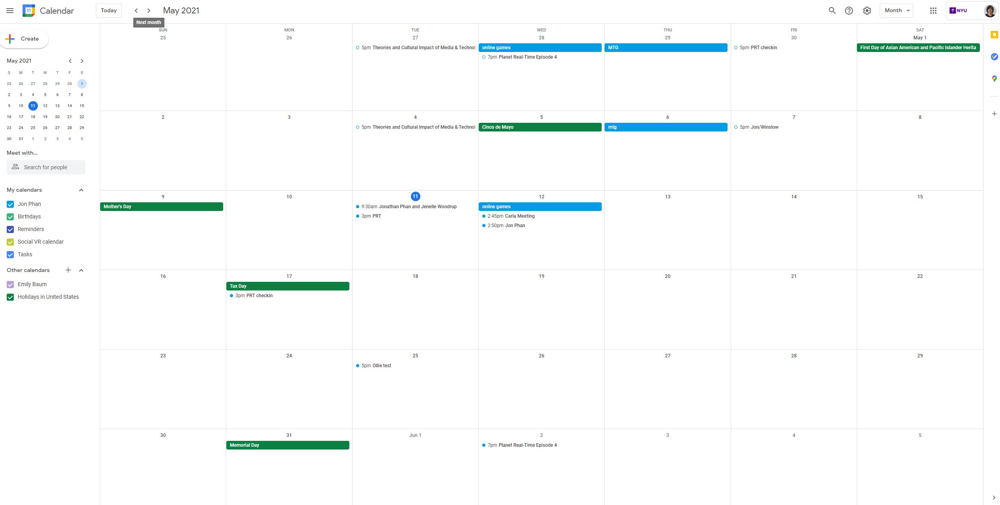

Week 12 continued development
Matt Romein
Matt's work was very visually impactful and agressive with the use of digital media. I thought that his use of his body being visually manipulated created a very visual and though provoking experience. His work did remind me of Martina as well, its really weird what we do to things that we know cannot feel or isn't real. Like in a video game, most people don't even bat an eye or give a second thought when maybe shooting someone or using a dragon to burn down a village. It kind of makes you think about our own psychology and ethics, I can imagine it being really strange seeing others mess with your digital double. For his work, I would say that his meat arcade was the most memorable since it was very shocking just like when he has dozens of himself flop on to the screen on his website. Real time avateering was pretty cool too and in Triplicate gave me the sense of frustration or insanity which with his style it really matches his style with shocking or agressiveness. Analmosh was probably my favorite since I thought the visuals were pretty cool, but personally it would have been a ton cooler if there were some heavy music being played to it rather than noise.Social Calendar
 For this week, not too much happened, I played games with my one buddy, finally getting a chance to catch up with him which was pretty nice as well as the usual webcam card games. I think everyone forgot about meeting for the Planet Real Time due to busyness. But yeah mostly just working on finals and trying to not lose too much sleep.home
while (!deck.isInOrder()) {
print 'Iteration ' + i;
deck.shuffle();
i++;
}
print 'It took ' + i + ' iterations to sort the deck.';